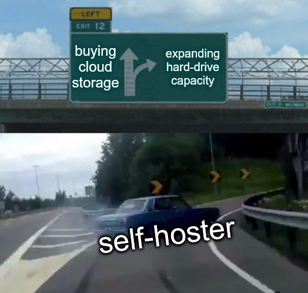
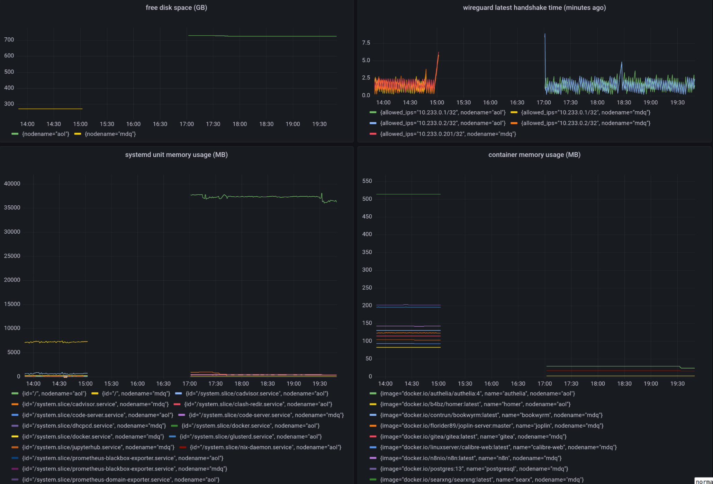
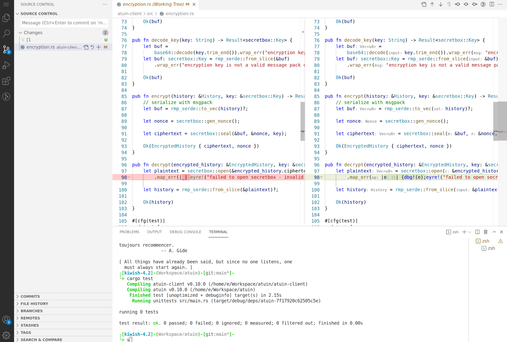
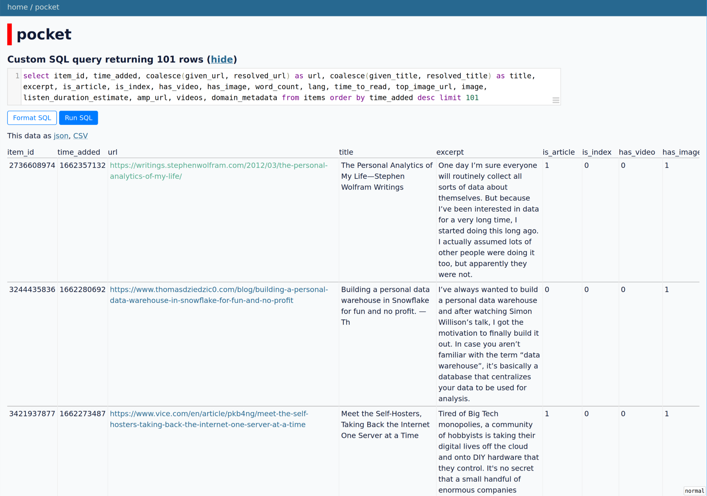
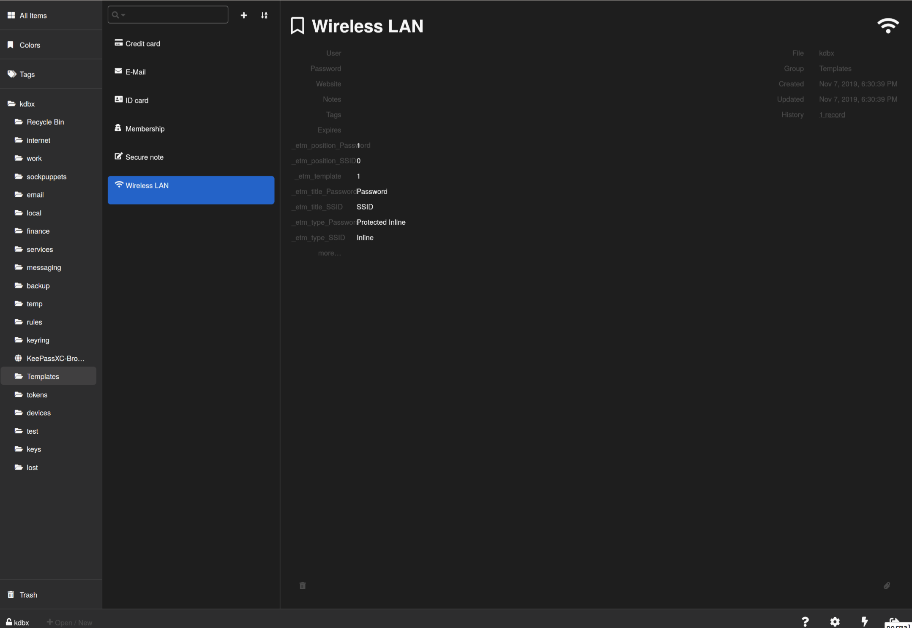
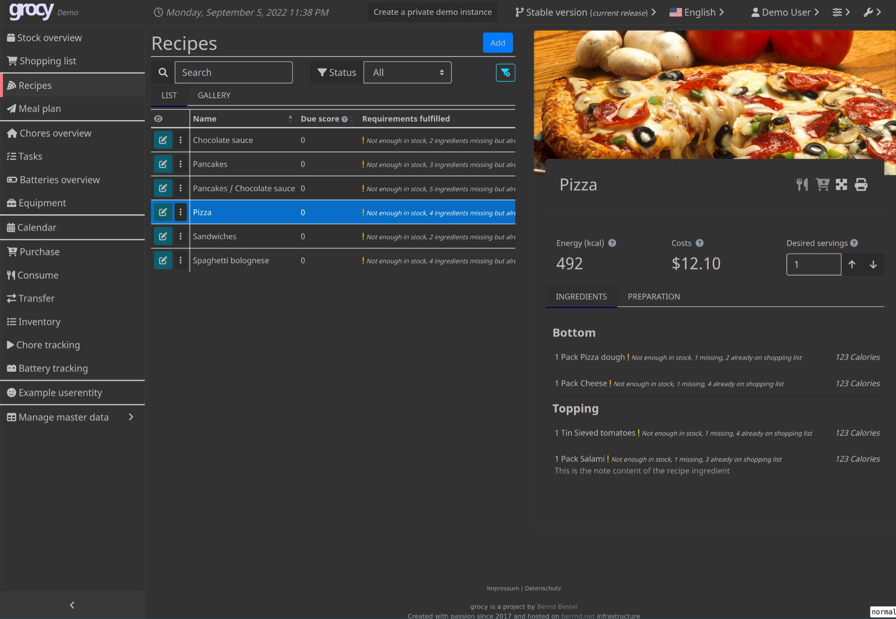
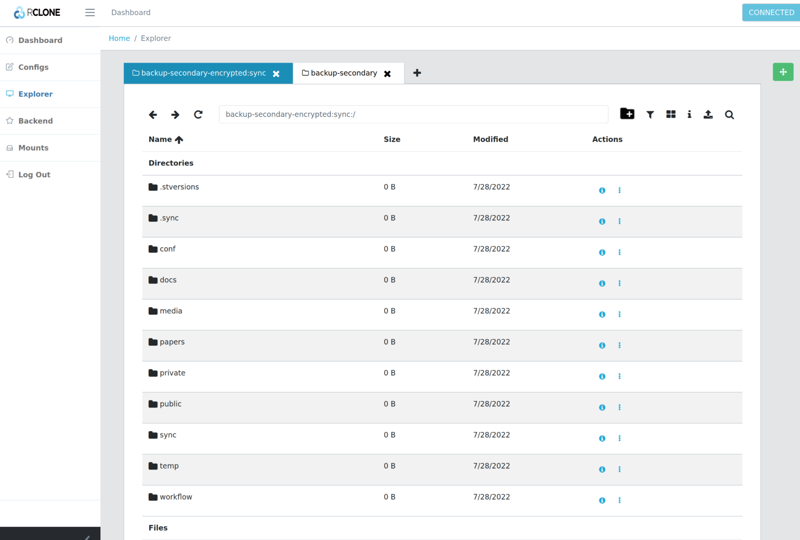

Introduction
Meet the Self-Hosters, Taking Back the Internet One Server at a Time
- What is self hosting?
- Why I choose to be a self-hoster?
- Is it viable to self host everything?
- Show something that is made possible with self hosting.
- A few selected topics in self-hosting, e.g. remote development, data backup, network security.
Why
I want my things back

It is an intellectual humiliation to not be able to take my things back. Getting my personal data out of Facebook | Ruben Verborgh. Doubly so when they exploit your data, and then take your data as hostage to let they continue their exploiting.
A real world metaphor Lebanon man hailed hero for holding Beirut bank hostage over savings - BBC News
Freedom as an utility
Just having the possibility is exulting.
希望本无所谓有，也无所谓无，这就像地上的路，其实地上本没有路，走的人多了，也便成了路。
Free from want

Free from fear
- Google Graveyard - Killed by Google
- The Shanghai data leak shows China’s state surveillance is expanding too fast to handle | Fortune
- Imagine one day you wake up to found out your google account is locked. google account Algolia search
- What about your wechat account is deactivated? 一男子因微信被封号跳楼自杀，腾讯回应：涉嫌色情骚扰
The freedom to run, copy, distribute, study, change and improve the software
Kind of raison d’etre.
I read a lot of articles with Pocket. The search function of Pocket works poorly. I frequently find myself unable to recall some articles I saved on pocket. I am pretty excited about Mozilla’s acquisition of pocket, I imagine it would be easier for me to export my data, and auto-label the articles I read on pocket. My wish is like waiting for Godot, it bears no fruits, cf Open source Pocket server-side code. I want the potential of improving something I use everyday.
Gaining insights for your digital life
An unexamined life is not worth living, aka did you update your Facebook status today?
- Seeking the Productive Life: Some Details of My Personal Infrastructure—Stephen Wolfram Writings
- Map of my personal data infrastructure | beepb00p
- Personal Data Warehouses: Reclaiming Your Data
- Productivity Porn - Caleb Schoepp
Tenets
Offline first
What’s it?
Why is it important?
High avaibility in the presense of network partition, But what about inconsitence, not critical in the case of personal computing. Also may use all the standard methods to solve inconsistency.
See also
Bring your own client
What’s it?
Why is it important?
Email clients as an example. Read and write email with mu4e in emacs!
Interoperability
What’s it?
A Legislative Path to an Interoperable Internet
Why is it important?
Not only client Interoperable with the server. Also data portability, back-end interoperability, and delegability. Take BookWyrm as an example.
Weak centralization
What’s it?
Another Penrose triangle
Why is it important?
Take atuin as an example.
Data portability
- GitHub - karlicoss/HPI: Human Programming Interface
- Datasette: An open source multi-tool for exploring and publishing data
- Perkeep
- upspin/upspin: Upspin: A framework for naming everyone’s everything.
- Personium | Open Source PDS Software
Show case

code-server

Edit files with your favrioute editor, but on the web and with all your files.
calibre web
Show how large my personal digital libraray is, and why it can’t be done with a public service. This also applies to your music/video library.
datasette

Explore my pocket data with datasette. Also mention powerful bussiness intelligence tools in the context of personal data.
smos
Show how amazing is smos a productivity tool, and how c
organice
Indicate why I am inifinitely more productive with my emacs config, and how I can choose my own tools.
keeweb

Store everything I have on the Internet without fear.
aria2
Download things from the office, use it when arriving home.
grocy

What can you make with all the materials in your refrigerator?
rclone/sftpgo

Mount remote storage, and expose them in a standarized interface.
Selected topics
Remote access
connectivity
DDNS + router port mapping
Need to dial up with your router, not the fiber optic modem. You may do all the DDNS port mapping work in the router if your router is flexible enough. Or you may run miniupnp in your server.
remote port mapping
autossh (my favorite), ngrok, frp, nps. Not enough if you have a few hosts to manage.
TOR
With a relay network, but it not so censorship-resistant.
Static VPN solutions
Wireguard is not dynamic enough. O(n) cost for a new host. Manually IPAM (ip addresses management). Not able to penetrate double-NAT.
Magic overlay networks
All computer science problems can be solved by adding a new layer of indirection. There are many solutions, e.g. zerotier, tailscale, netmaker, innernet, nebula, headscale, netbird, firezone.
- Single sign-on
- Auto hole punching
- Fallback to relay host when necessary
- Whole network stack available
node discovery
MDNS/LLMNR
Ever wonder how timemachine server on your LAN is discovered, or why you can just ping hostname in Windows? Free lunch if your overlay network supports multicast.
Coredns
More magic.
- Split-horizon DNS, i.e. resolving
hostname.example.comtohostname.localin LAN, or else resolving it to edge proxies. - Wildcard DNS record, i.e. cnaming
*.hostname.example.comtohostanme.example.com
exposing http services
Dynamic and self organizing.
SSL termination
Routing rules
remote editing
- mosh + tmux + neovim
- wezterm
- emacs TRAMP
- vscode remote
- code-server
- jetbrains fleet
- jupyter lab
- eclipse che
remote shell access
Synchronization
Syncthing
Syncing without a 7x24 hour listening server
rclone bisync
- Rich back end api support, almost supports every backend storage under the sun
- Highly modular architecte, may optionaly chunk, encrypt another repo
cryptomator
- Mounting common storage backends
- Encryption at rest
- Easy to use
rclone/sftpgo
- Serving the synced files while syncing is not set up on a temporary device
- With web interface
- Supporting access with webdav/sftp etc
Backup
Caveats
The Time-of-check to time-of-use problem in the case of data backup. An almost harmless example is that the backup software first reads the dirent to get a list of all files, and then it tries to read the file content, now it founds out the file is no longer there. So backing up this file failed. A more pernicious example is that the backup software backs up two inconsistent part of a file, thus results in file corruption. If you want to be absolutely sure about the integerity of the file, you can either let the underlying software so its back up job, or create a file system level snapshot.
File system backup
- snapshotting, e.g. zfsonlinux/zfs-auto-snapshot
- backup, e.g. jimsalterjrs/sanoid
File system agnostic backup
Two styles of backing up
- Create an archive and forget it. When the back up lags behind current state too much. Create a new backup and overwrite existing one.
- Continuous, incremental back up some directory. Everything the back job runs, the backup software create a snapshot, tries to deduplicate file contents.
tar
tar -C "$HOME" --zstd -cpf - --one-file-system --exclude-vcs-ignores --exclude-backups --exclude-caches-all --exclude="$encrypted_backup_file" "$HOME" | gpg --yes --pinentry-mode loopback --symmetric --cipher-algo aes256 -o "$encrypted_backup_file"
rclone
rclone sync ~/Sync/ backup-primary-encrypted:/sync/
cat ~/.config/rclone/rclone.conf
[backup-primary-encrypted]
type = crypt
remote = backup-primary:encrypted
password = passwordheree
restic
- With all the rclone backends
- Encryption, deduplication, incremental backup
- No compression
borgbackup
- Can only back up to host with ssh access, or back up locally
- Encryption, deduplication, incremental backup
- Compression
See also
GitHub - restic/others: Exhaustive list of backup solutions for Linux
Service provision
Off-the-shelf solutions
TODO: add a meme Fear not, we already have multiple solutions designed for this niche market. awesome-selfhosted/awesome-selfhosted Self-hosting Solutions
My take
See repo.
Security
- fail2ban
- microvm
- sops
- vault
- authelia
- lldap